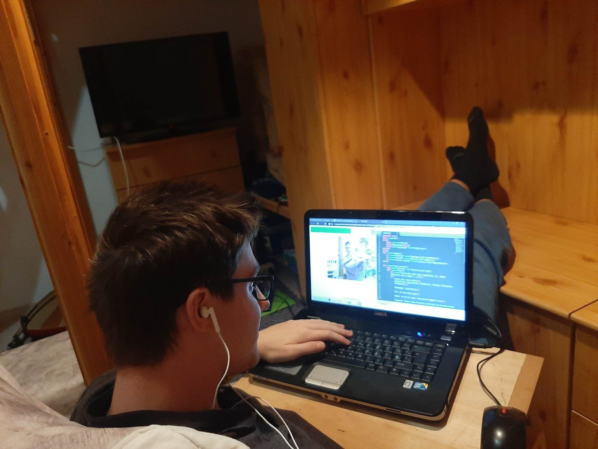
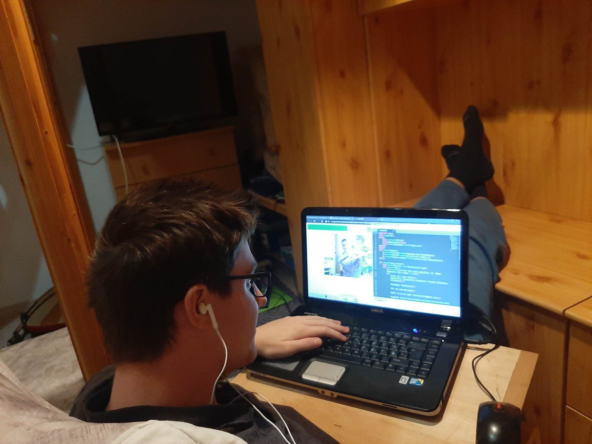

A weboldal kinézet terve
A weblapom elkészítéséhez a legnagyobb inspirációt az interneten található és egyéb videókban bemutatott weblapok jelentették. Az elején elterveztem, hogy kevésbé hivatalos, és inkább oldottabb hangulatú weboldalt szeretnék készíteni, úgy gondolom hogy ez a személyiségemhez is jobban illik. Az Önmagam eladhatósága és mások meggyőzése helyett csak szimplám az életem boldogabb képeiből és emlékeiből állítottam össze ezt a portfóliót.Természetesen ez nem zárja ki hogy a későbbiekben változtassak az oldalamon, hogyha egy munkahelyre vagy egy formálisabb alkalomra be szeretném küldeni. Az alap tervet egyszerűen paintben készítettem el és ez alapján kezdtem megalkotni a weboldalt. A folyamat során sokat változott a honlap kinézete, sok próbálkozáson, színkombináción mentem keresztül. Végül úgy gondolom, hogy a tőlem telhető legjobbat hoztam ki belőle.
 
